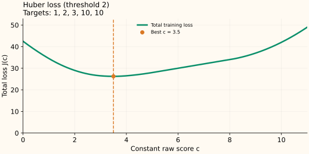

Huber Loss: Finding a Constant by Balancing Clipped Residuals
Huber loss uses squared error near a good prediction and linear growth for large errors. Its best constant balances residuals after clipping them. It is generally neither the ordinary mean nor the median.
A quadratic center with linear tails
Let $e=y-F$ and choose a fixed threshold $\delta>0$ in the target’s units. The score $F$ is the reported prediction:
At $|e|=\delta$, the two pieces have the same value and slope. Inside, the residual derivative is $e$; outside, it is $+\delta$ or $-\delta$. Write this capped slope as $\psi_\delta(e)=\operatorname{clip}(e,-\delta,\delta)$.
Because $e=y-F$, the score derivative is $-\psi_\delta(e)$ and the negative-gradient correction is $\psi_\delta(e)$. This caps a row’s direct gradient contribution. The threshold remains fixed throughout the derivation below; fitting a separate scale parameter would define a different optimization problem.
Derive the balance equation
Give every row prediction $c$ and minimize $J(c)=\sum_i\ell_\delta(y_i-c)$. The chain rule supplies $d(y_i-c)/dc=-1$:
The second form uses the fact that clipping to a symmetric interval changes sign when its input changes sign. The minimizing constant therefore satisfies
Huber loss is convex, so a zero aggregate derivative is a global minimum. There is no universal mean-or-median formula: which observations are clipped depends on the unknown constant itself.
Solve one case explicitly
Take $y=[1,2,3,10,10]$ and $\delta=2$. Look for a solution between 3 and 4. In that interval, the first observation contributes the capped slope $+2$; the next two contribute $c-2$ and $c-3$; each 10 contributes $-2$.
The result lies in the interval we assumed, so the case calculation is consistent. At 3.5, the clipped residuals $\psi_2(y_i-c)$ are $[-2,-1.5,-0.5,2,2]$ and sum to zero. The mean is 5.2 and the median is 3; neither equals this Huber optimum.
The total loss is $3+1.125+0.125+11+11=26.25$, compared with 26.5 at the median and 28.4 at the mean.


How to find the constant for arbitrary data
Define $S(c)=\sum_i\operatorname{clip}(c-y_i,-\delta,\delta)$. Each term is nondecreasing, so their sum is too. At the smallest target $S(c)\le0$; at the largest target $S(c)\ge0$. This brackets a root.
- Start with those two endpoints and evaluate their midpoint.
- If $S(c)<0$, the loss is still decreasing: move the left endpoint to $c$.
- If $S(c)>0$, move the right endpoint to $c$. If it is zero, you have a minimizer.
- Repeat until the score interval is sufficiently small.
A minimum need not be unique. For targets $[0,10]$ with $\delta=1$, every $c\in[1,9]$ balances two opposite capped slopes and has the same loss 9. Bisection can return one point in that interval.
Thresholds and weights have different roles
If all residuals at the solution lie in the quadratic region, the balance equation reduces to the mean equation. With large residuals clipped, their slopes no longer grow with distance. Changing the units of the target requires a corresponding change in $\delta$ to preserve that division.
For fixed weights $w_i\ge0$ of positive total, the condition becomes $\sum_iw_i\operatorname{clip}(c-y_i,-\delta,\delta)=0$. A large weight still gives a row more influence even though its per-unit-weight slope is capped.
Sources and reproducible figures
The examples and plots are computed by this reproduction script, which also checks the stated minima. Inspect the figure data.